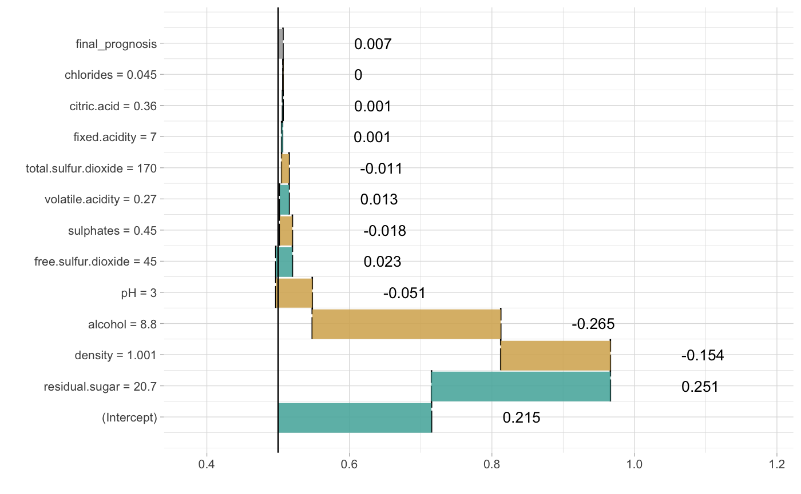

Create the broken object for glm models
Create the broken object for glm models
# S3 method for glm broken(model, new_observation, ..., baseline = 0, predict.function = stats::predict.glm)
Arguments
| model | a glm model |
|---|---|
| new_observation | a new observation with columns that corresponds to variables used in the model |
| ... | other parameters |
| baseline | the origin/baseline for the breakDown plots, where the rectangles start. It may be a number or a character "Intercept". In the latter case the orgin will be set to model intercept. |
| predict.function | function that will calculate predictions out of model (typically |
Value
an object of the broken class
Examples
# example for wine data wine$qualityb <- factor(wine$quality > 5.5, labels = c("bad", "good")) modelg <- glm(qualityb~fixed.acidity + volatile.acidity + citric.acid + residual.sugar + chlorides + free.sulfur.dioxide + total.sulfur.dioxide + density + pH + sulphates + alcohol, data=wine, family = "binomial") new_observation <- wine[1,] br <- broken(modelg, new_observation) logit <- function(x) exp(x)/(1+exp(x)) plot(br, logit)# example for HR_data model <- glm(left~., data = HR_data, family = "binomial") explain_1 <- broken(model, HR_data[1,]) explain_1#> contribution #> (Intercept) -1.601 #> satisfaction_level = 0.38 0.963 #> number_project = 2 0.568 #> salary = low 0.388 #> Work_accident = 0 0.221 #> average_montly_hours = 157 -0.196 #> last_evaluation = 0.53 -0.136 #> time_spend_company = 3 -0.133 #> promotion_last_5years = 0 0.030 #> sales = sales 0.014 #> final_prognosis 0.118 #> baseline: 0plot(explain_1)plot(explain_1, trans = function(x) exp(x)/(1+exp(x)))#> contribution #> (Intercept) -1.476 #> salary = low 1.944 #> satisfaction_level = 0.38 -1.572 #> time_spend_company = 3 0.803 #> average_montly_hours = 157 0.700 #> number_project = 2 -0.630 #> last_evaluation = 0.53 0.387 #> sales = sales -0.039 #> Work_accident = 0 0.000 #> promotion_last_5years = 0 0.000 #> final_prognosis 0.118 #> baseline: 0plot(explain_2, trans = function(x) exp(x)/(1+exp(x)))